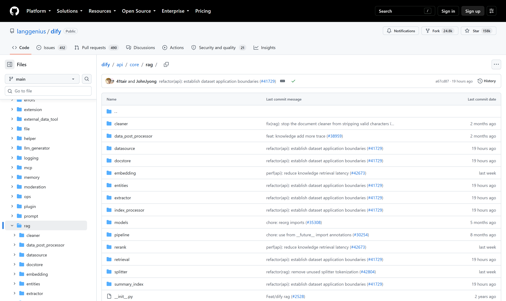
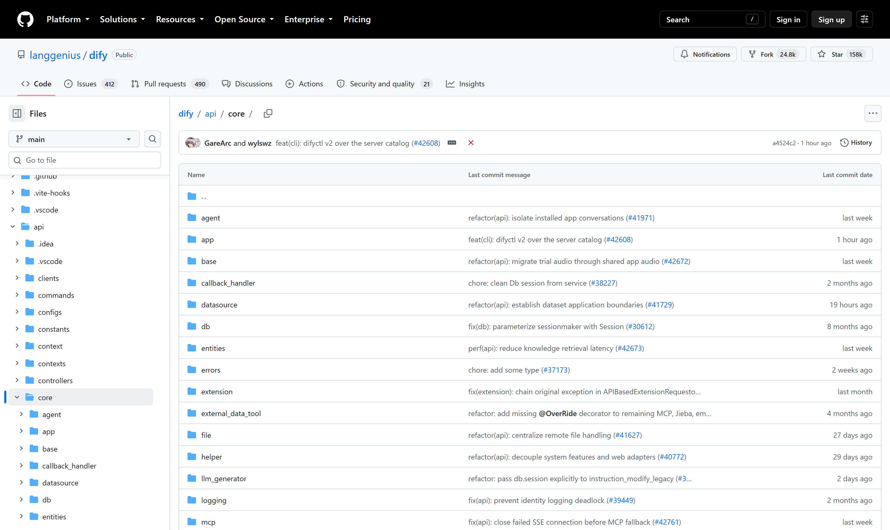
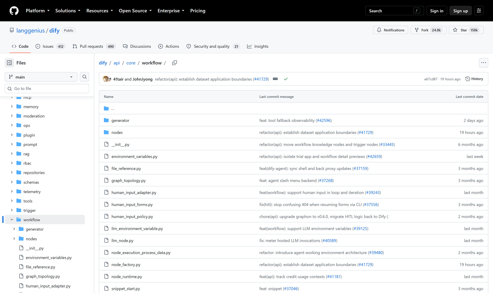

OSS PROJECT INTRO · DIFY 系列第 4 期（收官）：实战与源码导读
收官期，实战为主、源码为辅。实战端到端做一条企业知识库问答链：建知识库（分段与索引的取舍）→ 召回测试调优（对照管线口诀）→ 编排聊天应用 → 发布 API 接入业务系统。源码轻读三站：仓库目录地图（api 模块分层）→ workflow 执行引擎（图、节点工厂、变量池）→ 模型运行时抽象（插件守护进程）。四期走完，你不仅会用 Dify，还多了一套拆解"LLM 应用平台"这类系统的眼光。
实战任务单先摆上桌，三行验收标准：
| 任务 | 用到的能力 | 验收标准 |
|---|---|---|
| 企业知识库上线 | 分段设置、高质量索引、混合检索加重排 | 召回测试命中稳定 |
| 问答应用编排 | 聊天助手关联知识库、提示词与引用 | 回答贴文档、带引用 |
| 接入业务系统 | Service API、Bearer 密钥、会话续接 | curl 拿到 JSON 回答 |
整套实战跑在上一期部署的自托管环境上（两核四G即可），所有操作对照官方文档知识库与应用构建章节（v1.17.1，2026-09-30 核对）。下面逐步走。
路径照旧：知识 → 创建 → 上传文档。这一步两个决策最值得花时间。决策一，分段粒度：默认分段长度 500 起步没问题，但要按文档形态调——制度条款类文档条款边界清晰，切太碎会丢上下文，切太粗会稀释相关性；手册类按小节切。重叠设 50 左右防句子截断。决策二，索引方式：选高质量索引，它调用嵌入模型向量化，检索精度远好于经济模式的关键词路线；嵌入模型在模型供应商里选，语义匹配选中文能力强的型号。上传后等处理完成，知识库列表里状态变可用即成。
来源注记——docs.dify.ai《Create a Ready-to-Use Knowledge Base》与分块设置章节（2026-09-30 核对）：上传、分段预览、索引方式与检索设置四步为官方口径。
用第 3 期的口诀干活：回答不对，先分清入库切坏还是查询捞歪。进入知识库详情的召回测试，拿 20 条真实业务问题打样，看命中分段是否贴题：
每改一次配置，同一份问题集重测一轮，命中稳定再往下走。这条"改配置 → 重测"的循环，就是 RAG 调优的全部日常。

建一个聊天助手，编排页三件事：提示词——写明角色（"企业制度助理"）、答题边界（"只依据知识库内容回答，没有依据就直说"）、引用要求；上下文——把知识库关联进来，检索节点自动把召回分段注入上下文变量；参数——温度调低（制度问答要稳，不要发散）。发布前用右侧预览问几轮，确认回答贴文档、引用能对上。
这条链上每一环出问题的排查路径，第 3 期都铺过了：回答发散是提示词与温度的事，引不对是检索的事，报错看应用日志与密钥权限。编排页只是把这些环节串成可视化的图，底层还是那套管线。
应用右上角"API 访问"生成密钥（app- 开头），业务系统侧十行代码都不用：
curl -X POST 'http://your-host/v1/chat-messages' \
-H 'Authorization: Bearer app-xxxxxx' \
-H 'Content-Type: application/json' \
-d '{"inputs": {}, "query": "年假怎么申请？",
"response_mode": "streaming", "user": "emp-1024"}'response_mode 选 streaming 时以 SSE 流式返回，适合做对话界面；blocking 则一次性拿完整 JSON。回答取 answer 字段，引用在元数据里；多轮对话把返回的 conversation_id 带回来即可续接。安全口径官方原话：密钥只在后端使用，别嵌进前端代码；每个用户传独立的 user 标识，便于审计与会话隔离。知识库本身也有 Service API——文档增删可以程序化，内容更新不必人肉进界面。
来源注记——docs.dify.ai API Reference Send Chat Message（2026-09-30 核对）：POST /chat-messages，inputs、query、user 必填，response_mode 默认 blocking 可选 streaming；Agent 类应用仅支持 streaming。
读源码第一站永远是目录地图，先建立"哪是门面、哪是引擎"的空间感：
dify/ 顶层（main，2026-09-30 核对）
├── api/ Python 后端（Flask + Celery）
│ ├── app.py / app_factory.py 入口与应用工厂
│ ├── controllers/ 接口层：路由与参数校验
│ ├── services/ 服务层：业务编排
│ ├── models/ ORM 模型
│ └── core/ "发动机舱"★ 本期重点
├── web/ Next.js 前端（画布）
└── docker/ compose 部署配置
分层是经典三层：controllers 收请求、services 编排业务、models 管数据，core 是被服务层调用的能力内核。读码路线跟着调用链走：从 controllers 找到对话接口，顺藤摸到 services，再进 core——与浏览器里点一次"发送消息"的路径完全同构。
api/core/workflow 是全仓库最值得精读的目录，它把"画布存图、引擎跑图、变量池传数据"落成了三组代码：
api/core/workflow/（main，2026-09-30 核对）
├── workflow_entry.py 执行入口：一次运行从这里开始
├── graph_topology.py 图拓扑：解析画布结构与执行顺序
├── node_factory.py 节点工厂：按类型实例化节点
├── node_runtime.py 节点运行时：单节点的执行状态
├── variable_pool_initializer.py 变量池：跨节点数据存取
├── human_input_*.py 人审：表单、策略、适配
├── nodes/ 各类节点的实现
└── generator/ 运行输出的流式生成读这个目录的方法：顺着"一次运行"的生命周期读——entry 拿到图 → topology 解析出执行顺序 → factory 逐个造节点 → runtime 执行单节点、读写变量池 → generator 把增量输出流给前端。人审模块是亮点：流程暂停、表单回收、恢复执行，把"人在回路"做成了引擎的一等公民。

Dify 1.0 起模型与工具全部插件化，core 里的落点是 plugin 目录加一个独立进程：api 只含插件体系的客户端接口，真正的模型调用发生在 compose 里的 plugin_daemon 容器。调用链是：应用 → core/plugin 的接口封装 → 本地回环调 plugin_daemon → 对应供应商插件 → 上游模型 API。读码三个要点：其一，core 里没有 if-else 区分供应商——模型差异全部沉淀在插件侧，平台侧只有统一契约；其二，core/plugin 与 core/model_manager.py 管"选哪个模型、走哪个凭据"，与"怎么调"彻底分离；其三，这条隔离带就是"换模型不改应用"的源码证据——平台只依赖契约，供应商只是契约的实现者。
来源注记——仓库 api/core 目录（main，2026-09-30 核对）：core/plugin 为插件体系接口、model_manager.py 为模型管理入口；docker/docker-compose.yaml 中 plugin_daemon 为独立服务容器（2026-09-30 核对）。
这套手艺不止用于 Dify：任何"平台 + 引擎 + 插件"结构的系统（规则引擎、网关、CI/CD）都能照此拆解。这就是收官期想留给你的东西：不止会用一个工具，而是一套读平台类源码的眼光。
每题点击选项立即反馈 · 共 3 题
1. 召回测试发现"命中的段落被切碎"，该调哪？
2. 业务系统接入 Dify 应用，会话续接靠什么？
3. "换模型不改应用"在源码层的证据是？
按官方口径逐项过。密钥治理：app- 密钥只在后端持有，前端绝不落地；密钥按应用隔离，一个应用一把，泄露即吊销重发；调用走内网或加网关限流，别把 Dify 接口直接暴露公网。用户标识：每轮请求带独立且稳定的 user 值（工号或系统内 ID），这是官方设计的会话隔离与审计粒度——不要全系统共用一个 user，否则会话串线、审计也无法归因。响应模式：对话界面选 streaming（SSE 流式，体验好），系统间调用选 blocking（一次拿全，好处理）；注意 Agent 类应用只支持 streaming，选型时就该想清楚下游怎么消费。会话与上下文：多轮把 conversation_id 带回来，超时或换话题时重开会话；上下文长度有上限，历史别无限堆。审计与回滚：应用日志页看每轮调用的引用命中与成本；提示词或知识库大改后，用固定问题集回归测试再放量；知识库文档走 Service API 程序化更新，更新记录留痕。兜底：接口失败的业务侧降级路径（转人工、返回兜底话术）必须在接入设计里，LLM 应用进生产链路的第一原则是它挂了，业务还能走。
Java 架构师手边就有现成同构物。例一，Spring Cloud Data Flow / 流水线编排：任务节点各干一件事，数据经消息或上下文传递，执行靠编排器驱动——隔离带画在"任务实现"与"编排调度"之间，对应 Dify 的 nodes 目录与引擎本体分离。例二，Camunda/Flowable 工作流引擎：流程定义是图（BPMN），引擎按图推进，变量域（variable scope）对应变量池，用户任务对应人审节点——Dify 的 human_input 模块几乎就是它的轻量翻版。例三，网关插件链：每个 filter 只做一件事（鉴权、限流、改写），上下文对象在链上传递，责任链驱动执行——变量池对应 context 对象，节点工厂对应 filter 的注册装配。共同规律三条：其一，把"做什么"（节点实现）与"何时做"（图驱动）拆开，两者才能各自演进；其二，跨节点数据收口到一个有边界的容器（变量池/上下文），避免节点间隐式耦合；其三，人工干预做成一等公民（人审节点/用户任务），自动化与人审在同一个模型里表达。反过来看，这套设计也有代价——图执行引入了调度开销与调试复杂度，简单顺序场景用它就是杀鸡用牛刀。读开源源码的最终产出，是你自己架构里"哪里该学、哪里该弃"的判断力。
带走这五句话：
Dify 四期到此收官。想继续深挖，去官方文档与 GitHub 仓库（docs.dify.ai / github.com/langgenius/dify，v1.17.1 口径，2026-09-30 核对）；回课程目录还有十几个系列等你拆。
Primary source：Dify 官方文档（docs.dify.ai）——本期实战步骤与 API 口径出自官方文档（v1.17.1，2026-09-30 核对）；源码结构出自 GitHub 仓库 main 分支。